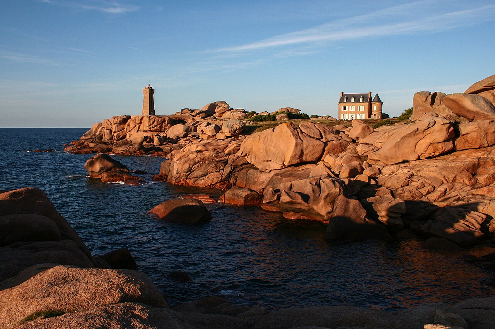
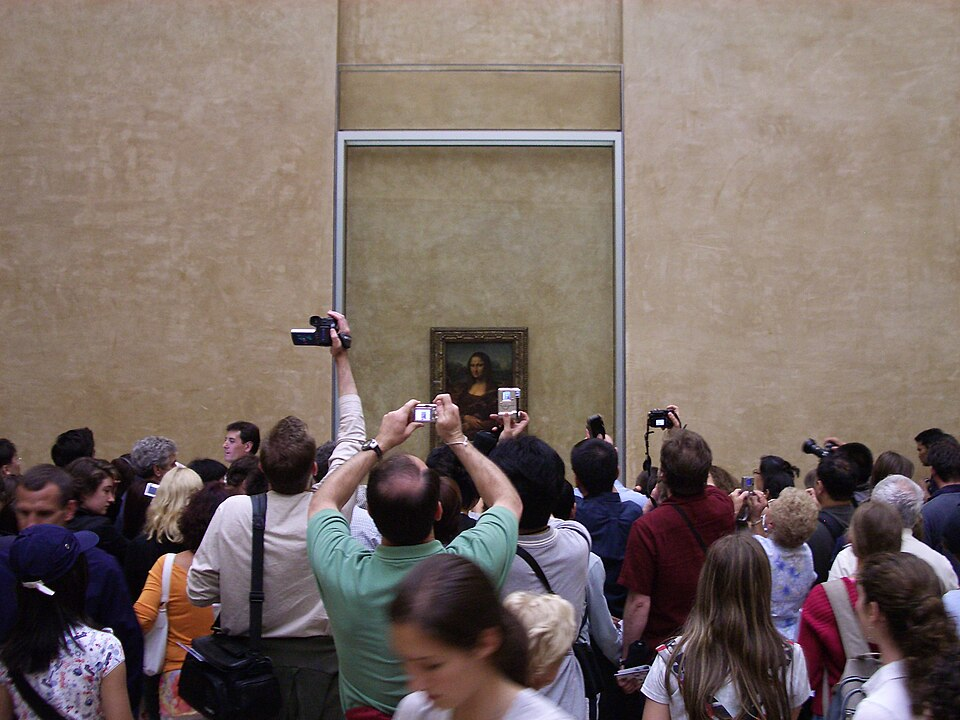
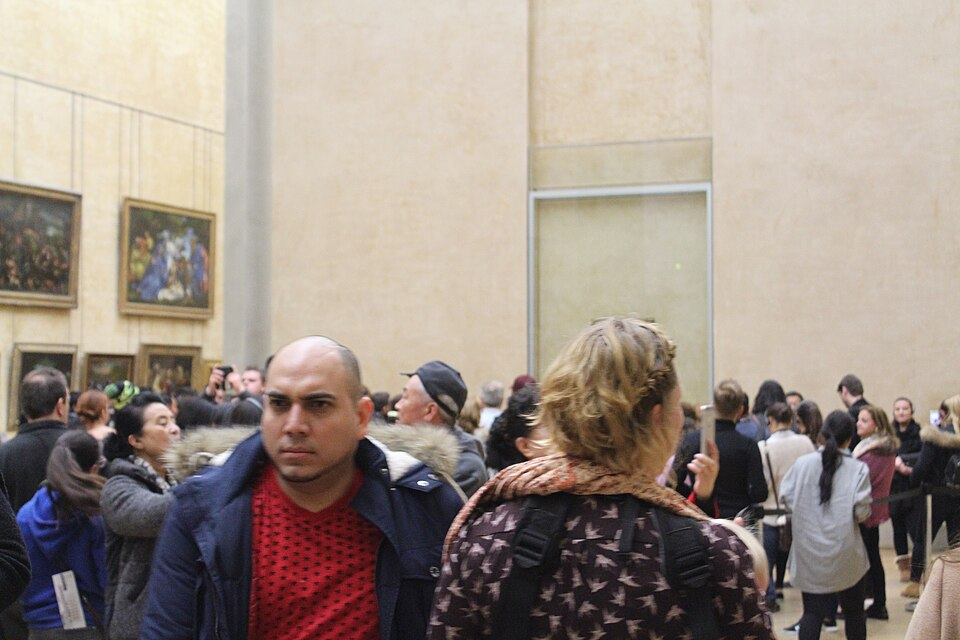
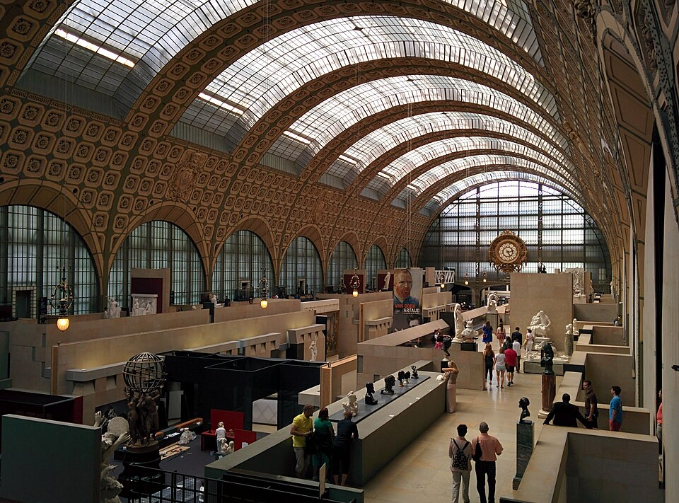
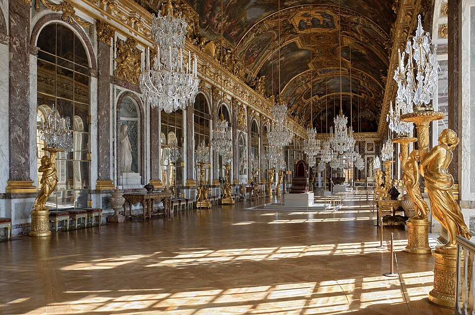
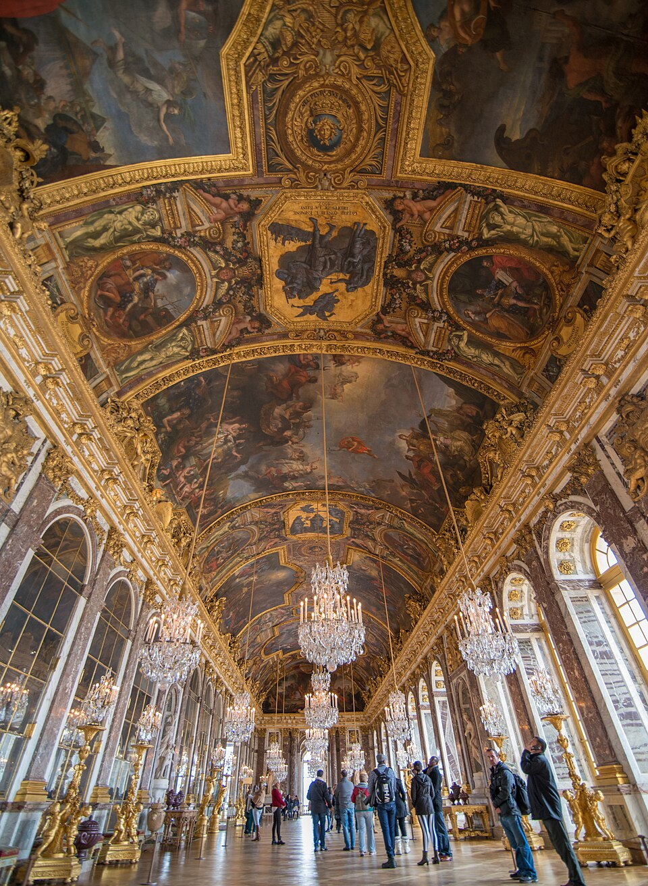
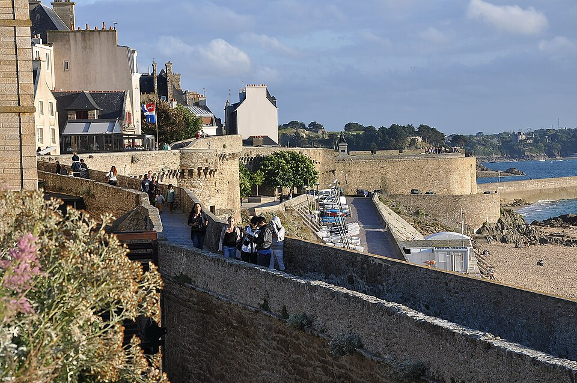
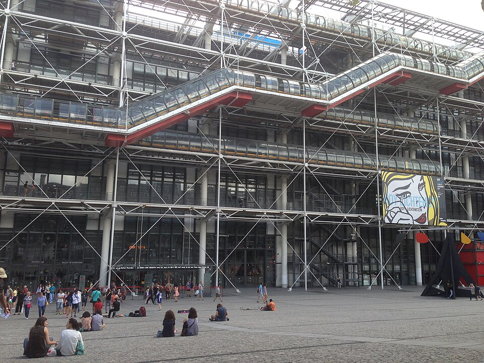
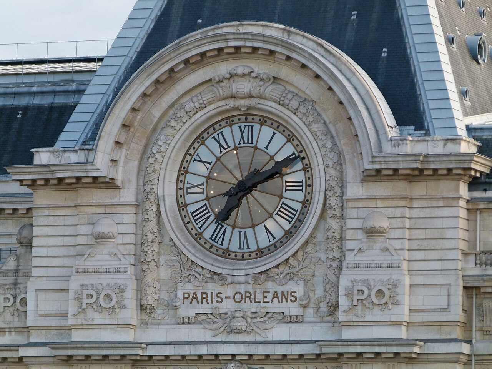
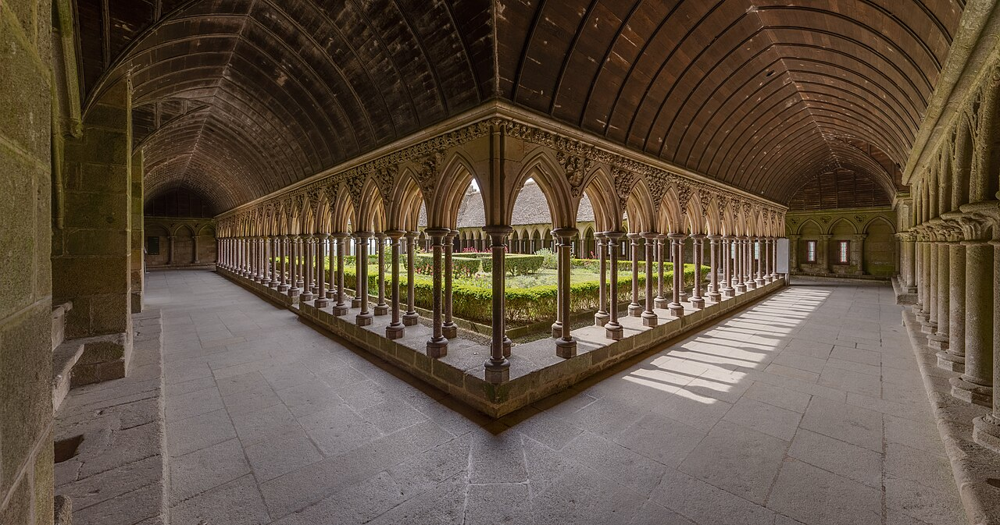

Ploumanac'h, côte de Granit rose, BretagneMARIKA · 12 NOVEMBRE
Vocabulaire, expressions et grammaireLes possessifs · les adverbes en -emment · les mots qui fâchent
Bonjour Marika !
Aujourd'hui, on part en voyage en France avec des mots nouveaux : des monuments, des tableaux, des paysages de Bretagne… et quelques expressions très directes.
Oggi partiamo per un viaggio in Francia con parole nuove: monumenti, quadri, paesaggi della Bretagna… e qualche espressione molto diretta.
Touche ▶ pour écouter, et la petite étiquette IT pour voir la traduction italienne. Chaque bonne réponse te fait gagner une étoile.
Tocca ▶ per ascoltare e la piccola etichetta IT per vedere la traduzione italiana. Ogni risposta giusta ti fa guadagnare una stella.
Bonne nouvelle : tes réponses sont enregistrées automatiquement sur ton appareil. Tu peux fermer la page et revenir plus tard avec ton lien : tu retrouveras tout. Attention : si tu changes d'appareil (par exemple du téléphone à l'ordinateur), tu repars de zéro. Commence et termine donc la leçon sur le même appareil.
Buona notizia: le tue risposte vengono salvate automaticamente sul tuo dispositivo. Puoi chiudere la pagina e tornare più tardi con il tuo link: ritroverai tutto. Attenzione: se cambi dispositivo (per esempio dal telefono al computer), ricominci da zero. Quindi comincia e finisci la lezione sullo stesso dispositivo.
Le Mont-Saint-Michel au lever du soleil
PARTIE 1
Vocabulaire et expressionsVocabolario ed espressioni
Marika, touche chaque carte pour la retourner : derrière, tu trouves la traduction, deux exemples et une petite note.
Marika, tocca ogni carta per girarla: dietro trovi la traduzione, due esempi e una piccola nota.

exclamation
Quel regard !
Touche la carte pour la retourner
Quel regard !
Che sguardo!
Devant La Joconde, tout le monde dit la même chose : « Quel regard ! »
Davanti alla Gioconda tutti dicono la stessa cosa: «Che sguardo!»
Quel regard il m'a lancé ! J'ai tout de suite compris qu'il était fâché.
Che sguardo mi ha lanciato! Ho capito subito che era arrabbiato.
Quel s'accorde avec le nom, sans article : quel regard, quelle vue, quels yeux, quelles couleurs !
Quel si accorda con il nome, senza articolo: che sguardo, che vista, che occhi, che colori!
📷 La Joconde, Léonard de Vinci · musée du Louvre, Paris

expression
quelque chose qui me dérange
Touche la carte pour la retourner
quelque chose qui me dérange
qualcosa che mi dà fastidio
Il y a quelque chose qui me dérange au Louvre : on ne voit plus les tableaux, on voit des téléphones.
C'è qualcosa che mi dà fastidio al Louvre: non si vedono più i quadri, si vedono i telefoni.
Ce qui me dérange, c'est qu'il ne dit jamais la vérité.
Quello che mi dà fastidio è che non dice mai la verità.
Pour mettre en relief : Ce qui me dérange, c'est…
Per mettere in evidenza: Quello che mi dà fastidio è…
📷 Les visiteurs devant La Joconde · musée du Louvre, Paris

verbe
déranger
Touche la carte pour la retourner
déranger
disturbare, dare fastidio
Excusez-moi de vous déranger : où se trouve la salle des impressionnistes ?
Scusi il disturbo: dov'è la sala degli impressionisti?
Ça te dérange si j'ouvre la fenêtre ?
Ti dà fastidio se apro la finestra?
Sur la porte d'une chambre d'hôtel : Ne pas déranger.
Sulla porta di una camera d'albergo: Non disturbare.
📷 La grande nef du musée d'Orsay, Paris
adjectif
être malin / maligne
Touche la carte pour la retourner
être malin / maligne
essere furbo / furba, sveglio
Arsène Lupin, le gentleman cambrioleur, est le plus malin des voleurs : il cache son trésor dans l'Aiguille d'Étretat.
Arsène Lupin, il ladro gentiluomo, è il più furbo dei ladri: nasconde il suo tesoro nell'Ago di Étretat.
Ma nièce est très maligne : elle a trouvé la solution avant tout le monde.
Mia nipote è molto furba: ha trovato la soluzione prima di tutti.
Maligne est le féminin de malin et veut dire « furba ». Le sens italien de « maligno » existe seulement en médecine : une tumeur maligne. Et pour gronder quelqu'un : Ne fais pas le malin !
Maligne è il femminile di malin e vuol dire «furba». Il senso di «maligno» esiste solo in medicina. Per rimproverare qualcuno: Non fare il furbo!
📷 Les falaises et l'Aiguille d'Étretat, Normandie

adjectif
être faux / fausse
Touche la carte pour la retourner
être faux / fausse
essere falso / falsa (una persona)
À la cour de Versailles, beaucoup de courtisans étaient faux : ils souriaient au roi et le critiquaient dans son dos.
Alla corte di Versailles molti cortigiani erano falsi: sorridevano al re e lo criticavano alle spalle.
Je n'aime pas les gens faux, je préfère qu'on me dise la vérité.
Non mi piacciono le persone false, preferisco che mi si dica la verità.
Un faux ami : une personne fausse, mais aussi un mot qui ressemble à un mot italien et qui ne veut pas dire la même chose, comme maligne !
Un falso amico: una persona falsa, ma anche una parola che somiglia a una parola italiana e non ha lo stesso significato, come maligne!
📷 La galerie des Glaces, château de Versailles

adjectif
être hypocrite
Touche la carte pour la retourner
être hypocrite
essere ipocrita
Tartuffe, le personnage de Molière, est le grand hypocrite du théâtre français. La pièce a été jouée pour la première fois à Versailles en 1664.
Tartufo, il personaggio di Molière, è il grande ipocrita del teatro francese. La commedia è stata rappresentata per la prima volta a Versailles nel 1664.
C'est hypocrite de dire que tu adores ce cadeau si tu ne l'aimes pas.
È ipocrita dire che adori questo regalo se non ti piace.
Même forme au masculin et au féminin : il est hypocrite, elle est hypocrite. Le nom féminin : l'hypocrisie.
Stessa forma al maschile e al femminile. Il nome: l'ipocrisia.
📷 La galerie des Glaces, château de Versailles

expression
un ami à moi
Touche la carte pour la retourner
un ami à moi
un mio amico
Un ami à moi habite à Saint-Malo : il fait le tour des remparts tous les matins.
Un mio amico abita a Saint-Malo: fa il giro dei bastioni tutte le mattine.
C'est une amie à moi qui m'a conseillé ce restaurant de crêpes.
È una mia amica che mi ha consigliato questa crêperie.
On peut dire aussi : un de mes amis. Jamais « un mon ami » : en français, l'adjectif possessif ne prend pas d'article (→ grammaire).
Si può dire anche: uno dei miei amici. Mai «un mon ami»: in francese l'aggettivo possessivo non vuole l'articolo.
📷 Les remparts de Saint-Malo, Bretagne
verbe
transpirer
Touche la carte pour la retourner
transpirer
sudare
On transpire beaucoup quand on monte sur la dune du Pilat en plein été.
Si suda molto quando si sale sulla duna del Pilat in piena estate.
J'ai tellement transpiré que mon tee-shirt était trempé.
Ho sudato così tanto che la mia maglietta era fradicia.
Le nom : la transpiration. En langage familier, on dit aussi suer : « J'ai sué ! »
Il nome: la traspirazione. In modo familiare si dice anche suer.
📷 La dune du Pilat, Gironde

verbe
ne pas comprendre
Touche la carte pour la retourner
ne pas comprendre
non capire
Devant certaines œuvres du Centre Pompidou, je ne comprends pas tout, mais j'adore chercher.
Davanti ad alcune opere del Centre Pompidou non capisco tutto, ma adoro cercare.
Je ne comprends pas pourquoi il est parti sans dire au revoir.
Non capisco perché sia partito senza salutare.
Pour insister : Je n'y comprends rien !
Per insistere: Non ci capisco niente!
📷 Le Centre Pompidou, Paris
adjectif
être rustre
Touche la carte pour la retourner
être rustre
essere rozzo / rozza, zotico
Le gardien du phare était un peu rustre : il ne disait jamais bonjour aux promeneurs.
Il guardiano del faro era un po' rozzo: non salutava mai i passanti.
Ne sois pas rustre, remercie la dame !
Non essere maleducato, ringrazia la signora!
Même forme au masculin et au féminin. Comme nom, un rustre est une personne grossière, sans manières.
Stessa forma al maschile e al femminile. Come nome: un rustre = un cafone.
📷 Le sentier de la pointe du Raz, Finistère

L'horloge du musée d'Orsay, ParisPARTIE 2
Évidemment !Gli avverbi in -emment e -amment
👂On écrit E, on prononce A
Les adverbes en -emment et en -amment se prononcent de la même façon : [amɑ̃], comme le mot « amant ». On écrit é-v-i-d-e-m-m-e-n-t, mais on dit « évidamment ».
Gli avverbi in -emment e in -amment si pronunciano allo stesso modo: [amɑ̃], come la parola «amant». Si scrive con la E, ma si pronuncia con la A.
adjectif en -ent → -emmentadjectif en -ant → -amment
évident → évidemment · courant → couramment
evidente → ovviamente · corrente → correntemente
Touche un mot pour l'écouter.
Tocca una parola per ascoltarla.
Attention, il y a des exceptions : lent donne lentement, présent donne présentement. Et le même son « a » se cache dans le mot femme !
Attenzione, ci sono delle eccezioni: lent dà lentement, présent dà présentement. E lo stesso suono «a» si nasconde nella parola femme!
Apparemment, le musée est fermé le mardi.
A quanto pare il museo è chiuso il martedì.
Marika parle couramment italien, anglais et français, et elle se débrouille en espagnol.
Marika parla correntemente italiano, inglese e francese, e se la cava in spagnolo.
⚠️Attention : langage vulgaire !
Ces expressions sont très grossières. Tu ne dois pas les utiliser, mais tu dois savoir les reconnaître quand tu les entends dans un film, dans la rue ou dans une chanson.
Queste espressioni sono molto volgari. Non devi usarle, ma devi saperle riconoscere quando le senti in un film, per strada o in una canzone.
Ne me fais pas chier ! / Fais pas chier !
Non rompere le scatole! (in francese però è molto più volgare)
Plutôt : Laisse-moi tranquille ! · Tu m'embêtes !
Meglio dire così (registro corretto).
Ne me casse pas les couilles !
Non rompermi i maroni! (molto volgare)
Plutôt : Arrête de m'embêter !
Meglio dire così (registro corretto).
Envoyer quelqu'un se faire foutre · Va te faire foutre !
Mandare qualcuno a quel paese · Vaffanculo!
Plutôt : Envoyer promener quelqu'un · Fiche-moi la paix !
Meglio dire così (registro corretto).
Putain de merde !
Porca miseria! / Cazzo! (molto volgare)
Plutôt : Zut ! · Mince ! · Punaise !
Meglio dire così (registro corretto).

Le cloître de l'abbaye du Mont-Saint-MichelPARTIE 4 · GRAMMAIRE
Adjectifs et pronoms possessifsAggettivi e pronomi possessivi
Le secret pour ne jamais les confondre : il y a un nom juste après ? C'est un adjectif : mon voyage. Il n'y a pas de nom, le mot remplace le nom ? C'est un pronom : le mien.
Il segreto per non confonderli mai: c'è un nome subito dopo? È un aggettivo: mon voyage. Non c'è il nome, la parola sostituisce il nome? È un pronome: le mien.
1L'adjectif possessif
adjectif + nomjamais d'article
| masc. | fém. | pluriel | italiano | |
|---|---|---|---|---|
| je | mon | ma | mes | il mio, la mia, i miei |
| tu | ton | ta | tes | il tuo, la tua, i tuoi |
| il / elle | son | sa | ses | il suo, la sua, i suoi |
| nous | notre | notre | nos | il nostro, la nostra, i nostri |
| vous | votre | votre | vos | il vostro, la vostra, i vostri |
| ils / elles | leur | leur | leurs | il loro, la loro, i loro |
Ma valise est beige.
La mia valigia è beige.
Nos amis bretons nous attendent à Quimper.
I nostri amici bretoni ci aspettano a Quimper.
2Le pronom possessif
article + pronomil remplace le nom
| masc. | fém. | pluriel | italiano | |
|---|---|---|---|---|
| je | le mien | la mienne | les miens / les miennes | il mio, la mia… |
| tu | le tien | la tienne | les tiens / les tiennes | il tuo, la tua… |
| il / elle | le sien | la sienne | les siens / les siennes | il suo, la sua… |
| nous | le nôtre | la nôtre | les nôtres | il nostro, la nostra… |
| vous | le vôtre | la vôtre | les vôtres | il vostro, la vostra… |
| ils / elles | le leur | la leur | les leurs | il loro, la loro… |
Ta valise est rouge, la mienne est beige.
La tua valigia è rossa, la mia è beige.
Nos photos du Mont-Saint-Michel sont plus belles que les leurs.
Le nostre foto del Mont-Saint-Michel sono più belle delle loro.
🇮🇹Français et italien : la grande différence
En italien, l'adjectif possessif prend souvent l'article : « il mio viaggio », « la mia valigia ». En français, jamais : l'article n'existe qu'avec le pronom possessif.
In italiano l'aggettivo possessivo prende spesso l'articolo: «il mio viaggio», «la mia valigia». In francese mai: l'articolo esiste solo con il pronome possessivo.
Non
le mon voyagela ma valise
un mon ami
Oui
mon voyagema valise
un ami à moi · un de mes amis
Mon voyage en Bretagne.
Il mio viaggio in Bretagna.
Cette valise est la mienne.
Questa valigia è la mia.
⚖️Avec quoi s'accorde-t-il ?
Le possessif s'accorde avec l'objet possédé, pas avec la personne. Son ou sa peut donc vouloir dire « di lui » ou « di lei ».
Il possessivo si accorda con l'oggetto posseduto, non con la persona. Son o sa può quindi voler dire «di lui» o «di lei».
Marika et son copain Alessio adorent la Bretagne.
Marika e il suo ragazzo Alessio adorano la Bretagna.
Alessio et sa sœur ont visité Saint-Malo.
Alessio e sua sorella hanno visitato Saint-Malo.
Devant une voyelle ou un h muet, ma, ta, sa deviennent mon, ton, son : mon amie, son histoire.
Davanti a vocale o h muta, ma, ta, sa diventano mon, ton, son: mon amie, son histoire.
🎩Le piège du chapeau
notre, votre (adjectifs) : pas d'accent, o ouvert. le nôtre, le vôtre (pronoms) : accent circonflexe, o fermé.
notre, votre (aggettivi): niente accento, o aperta. le nôtre, le vôtre (pronomi): accento circonflesso, o chiusa.
C'est notre voiture ? Non, la nôtre est garée devant la crêperie.
È la nostra macchina? No, la nostra è parcheggiata davanti alla crêperie.
Votre hôtel est près de la plage, le nôtre est en ville.
Il vostro albergo è vicino alla spiaggia, il nostro è in città.
✨Pour aller plus loin
Avec à et de, l'article se contracte : au mien, aux miens, du mien, des miens.
Con à e de l'articolo si contrae: au mien, aux miens, du mien, des miens.
Je parle de ton voyage, pas du mien.
Parlo del tuo viaggio, non del mio.
Pour dire « è mio », on utilise souvent être à + moi, toi, lui, elle…
Per dire «è mio» si usa spesso être à + moi, toi, lui, elle…
Ce sac à dos est à moi.
Questo zaino è mio.
Et pour trinquer entre amis : « À la tienne ! » « À la vôtre ! »
E per brindare tra amici: «Alla tua!» «Alla vostra!»
Le Mont-Saint-Michel à marée haute
PARTIE 5
ExercicesEsercizi
1
Complète les phrasesCompleta le frasi con il vocabolario e le espressioni
Marika, écris le mot ou l'expression qui manque, puis touche « Vérifier ». Tu peux aussi toucher un mot de la liste pour l'écrire dans la case où tu es. Attention aux accords !
Marika, scrivi la parola o l'espressione che manca, poi tocca «Vérifier». Puoi anche toccare una parola della lista per scriverla nella casella in cui sei. Attenzione agli accordi!
1
Devant l'autoportrait de Van Gogh au musée d'Orsay, je me suis arrêtée : « ! »
Davanti all'autoritratto di Van Gogh al museo d'Orsay mi sono fermata: «Che sguardo!»
2
Excusez-moi de vous : savez-vous à quelle heure ferme le musée ?
Scusi il disturbo: sa a che ora chiude il museo?
3
Il y a dans ce projet : personne ne m'a demandé mon avis.
C'è qualcosa che mi dà fastidio in questo progetto: nessuno mi ha chiesto il mio parere.
4
Ne lui fais pas confiance, il est : il te sourit et il te critique dans ton dos.
Non fidarti di lui, è falso: ti sorride e ti critica alle spalle.
5
Dire « j'adore ton cadeau » quand on le déteste, c'est un peu .
Dire «adoro il tuo regalo» quando lo si detesta è un po' ipocrita.
6
Ma cousine a trouvé des billets moins chers que tout le monde : elle est vraiment !
Mia cugina ha trovato biglietti meno cari di tutti: è proprio furba!
7
travaille au Mont-Saint-Michel : il connaît par cœur les horaires des marées.
Un mio amico lavora al Mont-Saint-Michel: conosce a memoria gli orari delle maree.
8
Il faisait 35 degrés à Arles : nous avons toute la journée.
C'erano 35 gradi ad Arles: abbiamo sudato tutto il giorno.
9
Il n'a même pas dit merci au serveur, il est vraiment .
Non ha nemmeno detto grazie al cameriere, è proprio un cafone.
10
Je pourquoi il est si fâché contre nous.
Non capisco perché sia così arrabbiato con noi.
11
« Tu viens avec nous à Saint-Malo ? » « ! Je ne raterais ça pour rien au monde. »
«Vieni con noi a Saint-Malo?» «Ovviamente! Non me lo perderei per niente al mondo.»
2
Une journée au Mont-Saint-MichelConiuga i verbi al tempo indicato
Marika, conjugue les verbes entre parenthèses au temps indiqué, puis touche « Vérifier le texte ». Si tu te trompes, une petite explication apparaît.
Marika, coniuga i verbi tra parentesi al tempo indicato, poi tocca «Vérifier le texte». Se sbagli, appare una piccola spiegazione.
L'été dernier, Alessio et moi avons enfin réalisé un rêve : passer une journée au Mont-Saint-Michel. Quand nous (parvenir, passé composé)Siamo arrivati: passé composé con être, accordo al plurale. au pied du Mont, la marée (commencer + déjà, plus-que-parfait)Plus-que-parfait: azione anteriore a un'altra azione passata. Déjà va tra ausiliare e participio. à monter. Alessio, qui (craindre, imparfait)Craindre all'imperfetto: je craignais, il craignait. toujours d'être en retard, (se rendre compte, passé composé)Verbo pronominale: ausiliare être. Nessun accordo perché il complemento è «que…». soudain que nous (oublier, plus-que-parfait)Plus-que-parfait: avions + participio. les billets de la navette. « Il faut absolument que nous (résoudre, subjonctif présent)Il faut que + congiuntivo. Résoudre: que nous résolvions. ce problème avant midi ! » a-t-il dit. Heureusement, un guide qui nous (entendre, plus-que-parfait)Plus-que-parfait con avoir: il COD «nous» è prima del verbo, quindi accordo: entendus. nous a proposé son aide. Sans lui, nous (ne jamais réussir, conditionnel passé)Condizionale passato: ciò che sarebbe successo (ma non è successo). à entrer à temps. Pendant la visite, je (s'asseoir, passé composé)Verbo pronominale con être; Marika è una donna: assise. un long moment dans le cloître et, en (observer, gérondif)Gerundio: en + participio presente (-ant). les colonnes, je me suis dit que ce lieu (valoir, imparfait)Valoir all'imperfetto: il valait. vraiment le voyage. La prochaine fois, quand nous (acquérir, futur antérieur)Futur antérieur: azione futura compiuta prima di un'altra azione futura. Acquérir → acquis. un peu plus d'expérience des marées, nous (convaincre, futur simple)Futuro di convaincre: nous convaincrons. nos amis de venir avec nous, à condition qu'ils (consentir, subjonctif présent)À condition que + congiuntivo: qu'ils consentent. à se lever à cinq heures du matin !
3
Traduis en françaisTraduci in francese
Marika, traduis chaque phrase en français, puis regarde la correction et dis-moi honnêtement si ta traduction était juste.
Marika, traduci ogni frase in francese, poi guarda la correzione e dimmi onestamente se la tua traduzione era giusta.
1 Ovviamente non è colpa mia: è la tua valigia, non la mia!
Évidemment, ce n'est pas ma faute : c'est ta valise, pas la mienne !
💡 adjectif possessif sans article · pronom possessif avec article
Ta traduction était correcte ?
2 Un mio amico mi ha detto che sua sorella è molto furba.
Un ami à moi m'a dit que sa sœur était très maligne.
💡 un ami à moi · sa sœur (accord avec sœur) · maligne
Ta traduction était correcte ?
3 C'è qualcosa che mi dà fastidio: non capisco perché sia così falso.
Il y a quelque chose qui me dérange : je ne comprends pas pourquoi il est si faux.
💡 Après « je ne comprends pas pourquoi », on utilise l'indicatif.
Ta traduction était correcte ?
4 Scusate il disturbo, ma le nostre camere sono più piccole delle vostre.
Excusez-moi de vous déranger, mais nos chambres sont plus petites que les vôtres.
💡 les vôtres : accent circonflexe, avec article
Ta traduction était correcte ?
5 Abbiamo sudato tanto salendo sulla duna del Pilat.
Nous avons beaucoup transpiré en montant sur la dune du Pilat.
💡 en montant : gérondif
Ta traduction était correcte ?
6 Che sguardo! Quell'uomo è un po' rozzo, ma i suoi occhi sono magnifici.
Quel regard ! Cet homme est un peu rustre, mais ses yeux sont magnifiques.
💡 quel sans article · ses yeux
Ta traduction était correcte ?
Coucher de soleil à la pointe du Raz, Finistère
PARTIE 6
Exercice de réflexionProduzione scritta guidata
Emojis, « vu » et silences : sommes-nous devenus plus francs ou plus hypocrites ?
Sur WhatsApp, on répond avec un pouce levé, on laisse un message en « vu », on envoie un cœur pour ne pas dire ce qui nous dérange vraiment. Les écrans nous permettent de tout dire… ou de ne rien dire du tout.
Su WhatsApp si risponde con un pollice alzato, si lascia un messaggio su «visualizzato», si manda un cuore per non dire quello che ci dà davvero fastidio. Gli schermi ci permettono di dire tutto… o di non dire niente.
Sujet : Selon toi, nos messages et nos réseaux sociaux nous rendent-ils plus sincères ou plus faux dans nos relations de tous les jours, en famille, entre amis, au travail ? Donne ton avis avec des exemples précis de ta vie quotidienne. (220 à 280 mots)
Tema: secondo te, i nostri messaggi e i social ci rendono più sinceri o più falsi nelle relazioni di tutti i giorni, in famiglia, tra amici, al lavoro? Dai la tua opinione con esempi precisi della tua vita quotidiana. (220-280 parole)
💡Pour trouver tes idées
Est-ce plus facile pour toi de dire « non » par message ou en face ? Pourquoi ?
Per te è più facile dire «no» per messaggio o di persona? Perché?
Un emoji, c'est de la gentillesse ou une façon d'éviter une vraie conversation ?
Un'emoji è gentilezza o un modo per evitare una vera conversazione?
Laisser un message en « vu » sans répondre : manque de respect ou droit au silence ?
Lasciare un messaggio su «visualizzato» senza rispondere: mancanza di rispetto o diritto al silenzio?
Pense à un voyage ou à une soirée : les photos publiées montraient-elles la réalité ?
Pensa a un viaggio o a una serata: le foto pubblicate mostravano la realtà?
🗝️Mots utiles
la franchise la franchezzale manque de tact la mancanza di tattoblesser quelqu'un ferire qualcunoéviter un conflit evitare un conflittofaire semblant fare fintales non-dits le cose non dettesincère sinceroune relation de confiance un rapporto di fiduciaavoir le courage de avere il coraggio diil vaut mieux + infinitif è meglioen apparence in apparenzaau fond in fondo
🧭Organise ton texte
- Introduction (3 à 4 lignes) : pars d'une petite scène du quotidien, par exemple un message resté sans réponse, puis pose la question.Introduzione: parti da una piccola scena quotidiana, per esempio un messaggio rimasto senza risposta, poi poni la domanda.Il m'est arrivé récemment de…On pourrait se demander si…
- Premier paragraphe : ce que les messages rendent plus faux ou plus hypocrite, avec un exemple.Primo paragrafo: quello che i messaggi rendono più falso o più ipocrita, con un esempio.D'un côté,…Ce qui me dérange, c'est que…
- Deuxième paragraphe : ce qu'ils rendent plus facile ou plus sincère, avec un autre exemple.Secondo paragrafo: quello che rendono più facile o più sincero, con un altro esempio.D'un autre côté,…Il faut reconnaître que…
- Conclusion (3 à 4 lignes) : donne ton avis personnel et ouvre sur une question ou un conseil.Conclusione: dai la tua opinione personale e apri su una domanda o un consiglio.Finalement,…À mon avis, il vaut mieux…
Défi de Marika : utilise dans ton texte…
La sfida di Marika: usa nel tuo testo…
- au moins 3 mots ou expressions de la leçonalmeno 3 parole o espressioni della lezione
- au moins 2 pronoms possessifs (le mien, la tienne, les nôtres…)almeno 2 pronomi possessivi
- un adverbe en -emment ou en -ammentun avverbio in -emment o in -amment
- au moins 220 motsalmeno 220 parole
0 mots
★À revoir
Ici apparaissent les points où tu t'es trompée. Touche un point pour retourner à la règle.
Qui appaiono i punti in cui hai sbagliato. Tocca un punto per tornare alla regola.
Rien pour l'instant. Bravo !
Bonne nouvelle : tes réponses sont enregistrées automatiquement sur ton appareil. Tu peux fermer la page et revenir plus tard avec ton lien : tu retrouveras tout. Attention : si tu changes d'appareil (par exemple du téléphone à l'ordinateur), tu repars de zéro. Commence et termine donc la leçon sur le même appareil.
Buona notizia: le tue risposte vengono salvate automaticamente sul tuo dispositivo. Puoi chiudere la pagina e tornare più tardi con il tuo link: ritroverai tutto. Attenzione: se cambi dispositivo (per esempio dal telefono al computer), ricominci da zero. Quindi comincia e finisci la lezione sullo stesso dispositivo.
Photos : Wikimedia Commons, licences libres (auteurs et licences sur les pages des fichiers) : Côte de granite rose à Ploumanac'h (phare de Ploumanac'h) · Mont St Michel at sunrise · Horloge du Musée d'Orsay · Cloître Abbaye du Mont Saint-Michel 2015-05-28 · Mont Saint Michel at sunset, April 2025 · Pointe du Raz bei Sonnenuntergang · Visitors of Louvre in front of Mona Lisa · Visitors to the Louvre Viewing the Mona Lisa IMG 1386 · Musée d'Orsay (intérieur) avec horloge · Étretat - La Falaise d'Aval - ICE Photocompilation Viewing NE on La Falaise d’Amont & Étretat · Chateau Versailles Galerie des Glaces · Galerie des Glaces (23674119404) · Saint-Malo remparts 001 · 00 3029 Dune du Pilat - Frankreich · Centre Georges-Pompidou 01 · Finistère Pointe du Raz 01.
Le français avec Irène
Le français avec Irène